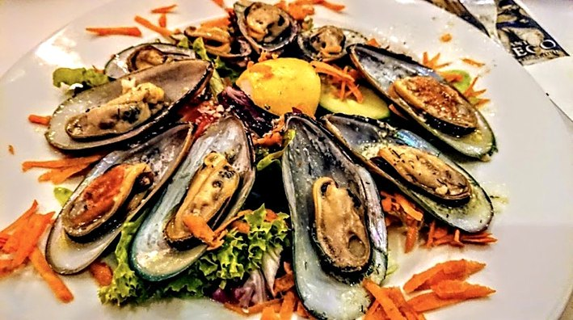
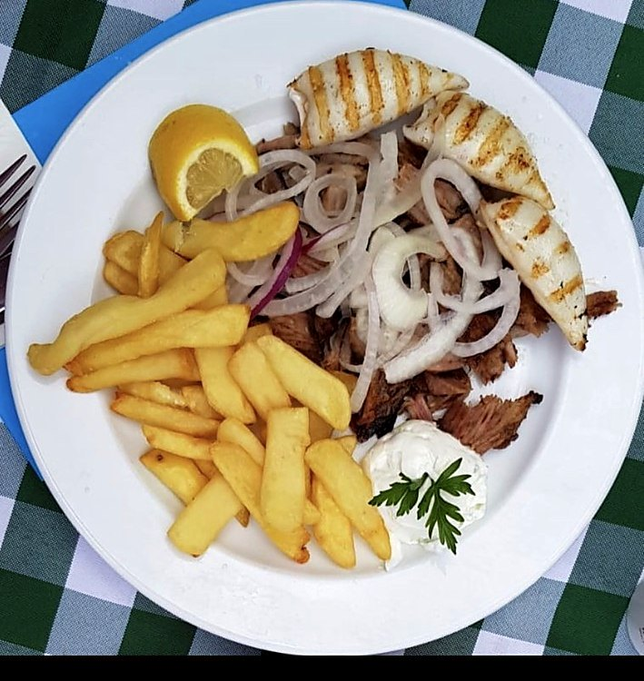
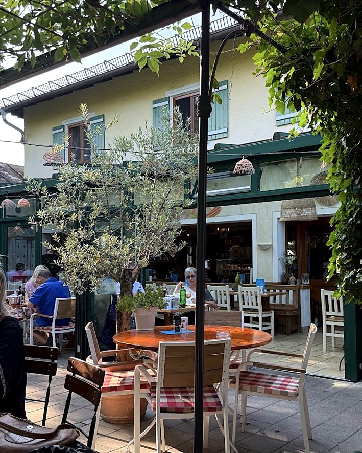

Willkommen im
EL GRECO
Griechische Gastfreundschaft
in Neubiberg
Genießen Sie griechische Spezialitäten in unserem gemütlichen Restaurant mit weitläufigem Gastgarten – mit Zeit für gute Gespräche und echte Gastfreundschaft.
Spezialitäten
mit Liebe
zubereitet
Unsere Speisekarte
Entdecken Sie unsere Spezialitäten
Von Meze und griechischen Klassikern bis zu Spezialitäten aus dem Meer.






Authentisch.
Frisch. Griechisch.
Filoxenía · Gastfreundschaft
Ein kleines Stück
Griechenland.
Ganz nah.
Ein Essen bei Freunden, ein langer Sommerabend und der Duft griechischer Spezialitäten: Im El Greco trifft traditionelle Küche auf echtes Wohlfühlen.
Ob Mittagessen, Abend zu zweit oder geselliges Beisammensein mit der Familie – wir freuen uns auf Ihren Besuch in Neubiberg.
Anfahrt & ÖffnungszeitenBesuch & Reservierung
Wir freuen uns auf Sie.
Öffnungszeiten
Montag – Samstag
11:30–14:30 Uhr & 17:30–23:00 Uhr
Sonntag & Feiertage
Bitte telefonisch erfragen